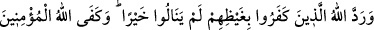
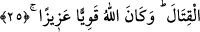
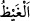
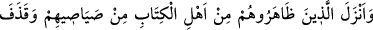
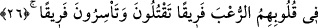

müslüman mısın?” diye sordular. “Evet, ben müslümanım, Muhammedî’yim” dedim. “O
iş kolay.” dediler ve devam ettiler: “Bize taş ve toprağın Muhammed’in
peygamberliğine şehâdet ettiği haberi ulaştı. Cansız varlık olduğu için bizim bu
zünnarlarımızda da taş ve toprağın hâlinden bir pay vardır. Eğer sen samîmî bir
müslüman isen Allah’tan dile ki şu zünnârlar da Muhammed’in nübüvvetine şâhidlik
etsinler ve biz de İslâm dâiresine girelim.” İbrahim başını secdeye koydu ve Allâh’a
şöyle yalvarmaya başladı: “Ey Allâh’ım, bana istediğimi ver, Habîbi’ne yardım et ve
İslâm’ı güçlendir.” Henüz duâsını tamamlamamıştı ki, her zünnâr açık bir dille: “Lâ
ilâhe illallah Muhammedu’r-rasûlullah” demeye başladı.
25. Allah, o inkâr edenleri hiçbir fayda elde edemeden öfkeleri ile geri çevirdi.
Allah(ın yardımı) savaşta mü’minlere yetti. Allah güçlüdür, mutlak galiptir.
Burada Hendek kıssasının geri kalanına tekrar dönülmektedir. Yâni olan hâdiseler
oldu ve “Allah, o inkâr edenleri” yâni ahzâbı/düşman birliklerini “hiçbir fayda”
hayır; istedikleri üstünlük ve zaferi “elde edemeden öfkeleri” ve hasretleri “ile geri
çevirdi.”
“
” şiddetli kızgınlık ve öfkedir. Bu da insanın kalbindeki kanın harekete geçmesi
ile duyduğu harârettir.
Burada kâfirlerin elde edemedikleri üstünlük ve zafer “hayır” diye isimlendirilmiştir.
Çünkü bu durum onlara göre hayır idi. Bu sebeple “hayır” kelimesi, onların kullandığı
şekilde ve iddiâlarına göre gelmiştir.
Kâfirler üzerine şiddetli fırtına ve melekler göndermek suretiyle “Allah(ın yardımı)
savaşta mü’minlere yetti.”
Sabah rüzgarı sana yardım için bel bağladı,
Yardım rüzgarı yapan kandili gördün.
“Allah” istediği her şeyi var etme konusunda “güçlüdür” her şeye “mutlak galiptir.”
Sonra Allah Teâlâ daha başka nasıl mü’minlere yettiğini haber vererek şöyle
buyurmuştur: